Heavily skewed
Average degree 14.4, with a long tail of very high-degree nodes.
September 6, 2026
Lecture 6 · Jhony H. Giraldo · Télécom Paris, Institut Polytechnique de Paris
Every lecture so far has learned from graphs. The graph was given, and we predicted something about it — a node label, a missing value, a future edge. This note reverses the arrow and asks where the graphs come from.
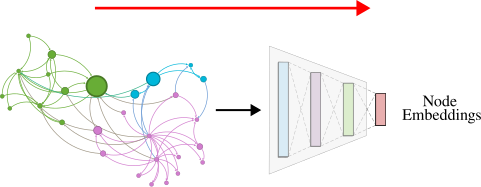
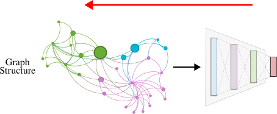
The route has three steps: first characterize what real graphs look like, then see how far a classical random-graph model gets, and finally learn the generation process from data.
After studying this note, you should be able to:
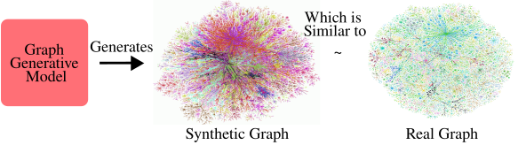
There are four distinct reasons to want this.
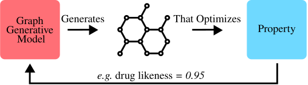
A generative model is only as good as the properties it reproduces, so we need to fix what we measure. The lecture uses four.
Definition 1 — Degree distribution
\(P(k)\) is the probability that a randomly chosen node has degree \(k\), computed as the normalized histogram
\[ P(k)=\frac{N_k}{N}, \]
where \(N_k\) is the number of nodes of degree \(k\).
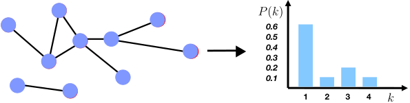
Definition 2 — Clustering coefficient
For a node \(i\) of degree \(k_i\),
\[ C_i=\frac{2e_i}{k_i(k_i-1)}, \]
where \(e_i\) is the number of edges among the neighbors of \(i\). The graph coefficient is the average \(C=\frac{1}{N}\sum_{i=1}^{N}C_i\).
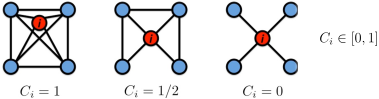
This is the same quantity as in Lecture 1 — now used to judge a generative model rather than to describe a node.
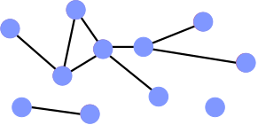
Definition 3 — Diameter and average path length
The diameter is the maximum shortest-path distance between any pair of nodes. It is fragile: a single long tail attached anywhere inflates it.
The average shortest path length is more robust,
\[ \bar{h}=\frac{1}{E_{\max}}\sum_{i,j\neq i}h_{ij}, \qquad E_{\max}=N(N-1), \]
with \(h_{ij}\) the distance from \(i\) to \(j\). In practice the average is taken over connected pairs only, so that infinite distances do not swallow the result.
The lecture’s reference is the MSN Messenger communication graph: one month of activity, 245 million users logged in, 180 million in conversations, more than 30 billion conversations and 255 billion messages. Two people are connected if they exchanged at least one message, giving 180 million nodes and 1.3 billion edges.
Its four measured properties:
Average degree 14.4, with a long tail of very high-degree nodes.
Your contacts are substantially likely to know one another.
About 99% of nodes lie in a single component.
The famous "six degrees of separation", measured.
Definition 4 — The two Erdős–Rényi models
\(G_{np}\): an undirected graph on \(N\) nodes in which each edge \((i,j)\) appears independently with probability \(p\).
\(G_{nm}\): an undirected graph on \(N\) nodes with \(m\) edges chosen uniformly at random (Erdős and Rényi 1959).
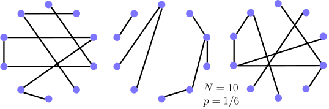
This one is worth deriving, because the answer is what condemns the model.
Worked example — \(\mathbb{E}[C_i]\) for \(G_{np}\)
Node \(i\) has degree \(k_i\), so its neighbors form \(\frac{k_i(k_i-1)}{2}\) distinct pairs. Each such pair is connected independently with probability \(p\), so the expected number of edges among the neighbors is
\[ \mathbb{E}[e_i]=p\,\frac{k_i(k_i-1)}{2}. \]
Substituting into Definition 2,
\[ \mathbb{E}[C_i]=\frac{2}{k_i(k_i-1)}\cdot p\,\frac{k_i(k_i-1)}{2}=p=\frac{\bar{k}}{N-1}\approx\frac{\bar{k}}{N}. \]
Read the result: if we hold the average degree \(\bar{k}\) fixed and grow the graph, the clustering coefficient goes to zero. A large random graph has no local structure at all.
The other classical result is a phase transition: the giant component appears exactly when the average degree reaches \(1\), that is \(p=1/(N-1)\) — the point at which each node has, in expectation, at least one edge.
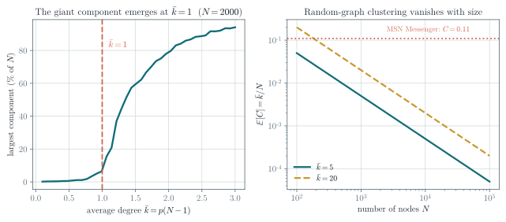
For \(G_{np}\) the diameter scales as \(\mathcal{O}\!\left(\log N/\log(pN)\right)\). Random graphs are good expanders, so a BFS reaches everything in a logarithmic number of steps: they can be enormous and still have every node a few hops from every other.
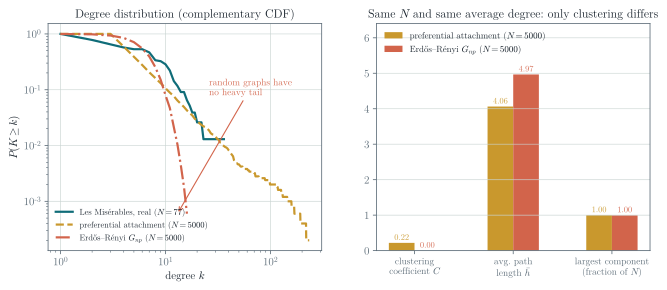
Check 1 — Are real networks random?
| property | \(G_{np}\) reproduces it? |
|---|---|
| Giant connected component | ✔ |
| Average path length | ✔ |
| Clustering coefficient | ✘ |
| Degree distribution | ✘ |
Two out of four, and the two failures are the interesting ones. The degree distribution is binomial rather than heavily skewed, there is no local structure, and the giant component in most real networks does not emerge through a sharp phase transition at all.
So: no, real networks are not random graphs. \(G_{np}\) nonetheless remains valuable as the reference point — the null model you compare against before claiming that a structure is meaningful, and the standard setting for analyzing the cost and stability of graph algorithms.
Other classical models improve on parts of this. The small-world model recovers a realistic clustering coefficient; the Kronecker graph model approximates several real properties at once. Both are left for self-study.
Check 2 — Why classical models are not enough
They rely on strong assumptions about how graphs form, which limits their flexibility. They use predefined rules rather than learning from data, so they cannot capture patterns nobody thought to encode. And they generalize poorly across domains, requiring manual tuning for each application.
Deep generative models instead learn the formation rules from examples, which is what the rest of this note is about.
Definition 5 — The generation problem
Given graphs sampled from an unknown real distribution \(p_{\text{data}}(G)\):
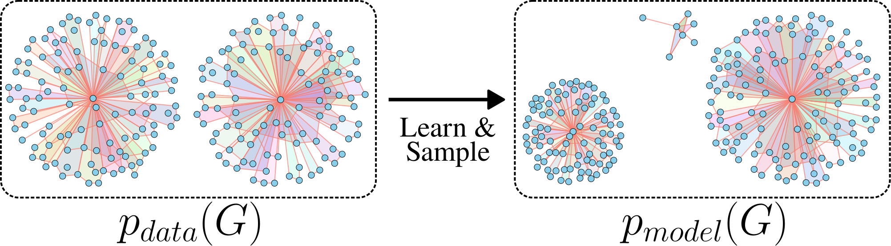
The lecture treats realistic graph generation — produce graphs similar to a given set. The goal-directed variant, generating graphs that optimize an objective under constraints, is not covered.
The standard principle: choose
\[ \boldsymbol{\theta}^{*}=\arg\max_{\boldsymbol{\theta}}\ \sum_{i}\log p_{\text{model}}(\mathbf{x}_i;\boldsymbol{\theta}), \]
the parameters under which the observed data is most probable.
The usual recipe is to transform noise. Draw \(\mathbf{z}_i\sim\mathcal{N}(0,\mathbf{I})\) and set \(\mathbf{x}_i=f(\mathbf{z}_i;\boldsymbol{\theta})\); if \(f\) is expressive enough, \(\mathbf{x}_i\) follows a complex distribution. We design \(f\) as a deep network and fit it to data.
Definition 6 — Auto-regressive factorization
Apply the chain rule to write the joint distribution as a product of conditionals:
\[ p_{\text{model}}(\mathbf{x};\boldsymbol{\theta})=\prod_{t=1}^{n}p_{\text{model}}(x_t\mid x_1,\ldots,x_{t-1};\boldsymbol{\theta}). \]
For graphs, \(x_t\) is the \(t\)-th action: add a node, or add an edge.
Auto-regressive models are attractive here because a single model serves both roles — density estimation and sampling — whereas a VAE or a GAN needs two or more components, each playing one part.
Check 3 — Lecture 4 called, it wants its idea back
This is the same auto-regressive principle as the forecasting model in Lecture 4: factor a complex joint object into a chain of conditionals, and learn one shared model for the conditional. There it was a time series; here it is a construction sequence.
The idea (You et al. 2018): generate a graph by sequentially adding nodes and edges.
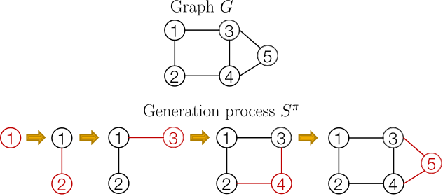
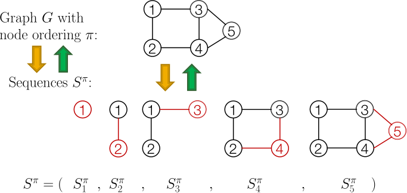
Each element \(S^{\pi}_i\) of that sequence is itself a sequence: the edges the new node forms with the nodes already present. Reading the adjacency matrix makes this concrete.
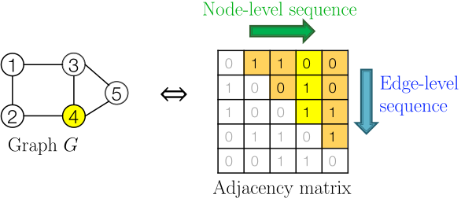
Check 4 — What we have achieved, and what it cost
Graph generation is now sequence generation, a problem with well-developed tools. Two processes must be modelled: generate a state for a new node (node level), and generate that node’s edges given the state (edge level).
The cost is that we introduced a node ordering that the graph itself does not have. A graph with \(N\) nodes has up to \(N!\) orderings, all describing the same object. GraphRNN samples one at random; that choice will come back in Section 7.
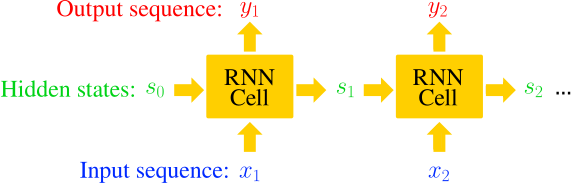
With \(s_t\) the state, \(x_t\) the input and \(y_t\) the output at step \(t\), and trainable \(\mathbf{W},\mathbf{U},\mathbf{V}\):
\[ s_t=\sigma\!\left(x_t\mathbf{W}+s_{t-1}\mathbf{U}\right), \qquad y_t=s_t\mathbf{V}. \]
More expressive cells — GRU, LSTM — slot in unchanged, and so do Transformers.
GraphRNN uses a node-level RNN and an edge-level RNN:
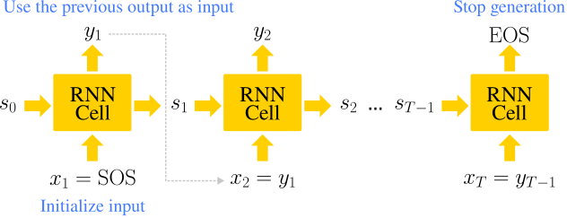
The fix is to treat each output as a distribution and sample from it. We want to model \(\prod_t p_{\text{model}}(x_t\mid x_1,\ldots,x_{t-1};\boldsymbol{\theta})\); so let \(y_t=p_{\text{model}}(x_{t+1}\mid x_1,\ldots,x_t;\boldsymbol{\theta})\) and draw \(x_{t+1}\sim y_t\).
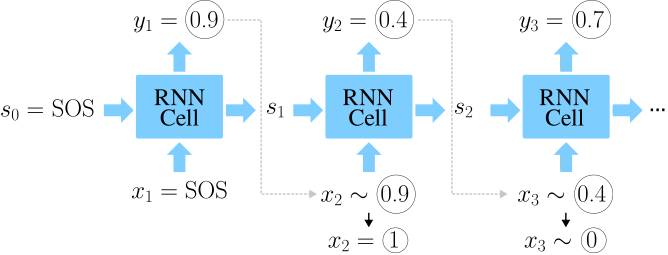
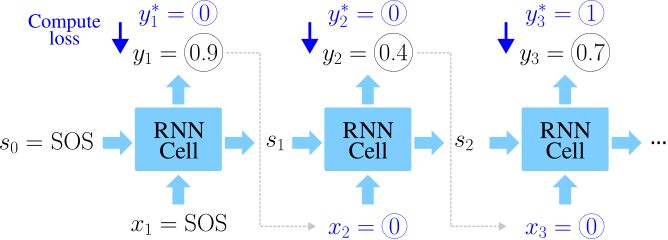
The loss is binary cross-entropy:
\[ \mathcal{L}=-\sum_{t}\left[y^{*}_t\log y_t+(1-y^{*}_t)\log(1-y_t)\right]. \]
If \(y^{*}_1=1\) we minimize \(-\log y_1\), pushing \(y_1\) up; if \(y^{*}_1=0\) we minimize \(-\log(1-y_1)\), pushing it down. So \(y_1\) fits the data.
Check 5 — The whole algorithm
At training time, teacher forcing supplies the true sequences. At test time, the model’s own samples are fed back.
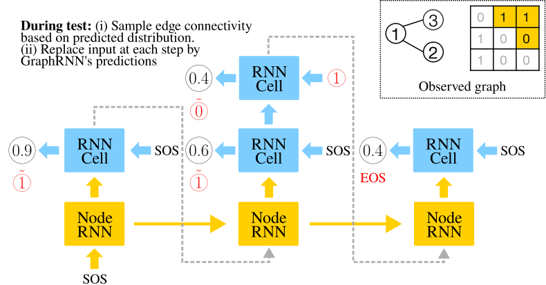
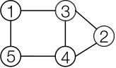
The authors mitigate the ordering problem with a BFS ordering, which bounds how far back a new node can plausibly connect. The cost problem remains:
\[ \mathcal{O}\!\left(\sum_{i=1}^{N}i\right)=\mathcal{O}\!\left(\frac{N(N+1)}{2}\right). \]
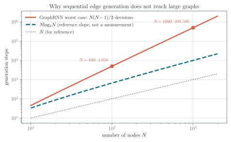
A more recent approach (Bergmeister et al. 2024) replaces the node ordering with coarsening.
Check 6 — Why merging preserves the right thing
Each merge is chosen so that the spectral properties of the graph Laplacian are preserved as well as possible (Loukas 2019).
That criterion is not arbitrary. Lecture 4 established that the Laplacian spectrum is where a graph’s structure lives — the eigenvalues are its frequencies, and smooth structure sits at the low end. Preserving the spectrum is the formal version of “keep as much of the graph as possible” while shrinking it.
Auto-regressive image generation has moved the same way: rather than emitting pixels in raster order, generate a coarse image and refine it. Graph generation from one side to the other has the same weakness raster order does — the model must commit to fine detail before the global structure exists.
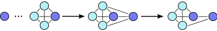
Check 7 — What this buys
The denoising within each step is performed by a GNN, so the machinery is the message passing of Lecture 2 applied inside a generative loop.
Compute \(C_i\) for the centre node of a star \(K_{1,5}\), and for a node in a triangle. Then compute the graph coefficient \(C\) for a path on 5 nodes, being careful with degree-1 nodes.
Reproduce the worked example, then evaluate \(\mathbb{E}[C]\) for MSN’s parameters (\(N=1.8\times10^{8}\), \(\bar{k}=14.4\)) and compare with the measured \(0.11\). By what factor is the model wrong?
Show that the degree distribution of \(G_{np}\) is binomial, \(P(k)=\binom{N-1}{k}p^{k}(1-p)^{N-1-k}\), and that it approaches a Poisson distribution for large \(N\) with \(\bar{k}\) fixed. Explain in one sentence why a Poisson tail cannot look like Figure 10.
Reproduce the left panel of Figure 9 with scripts/figures/lecture_06_figures.py. Vary \(N\) over \(\{500, 2000, 10000\}\) and describe what happens to the sharpness of the transition at \(\bar{k}=1\).
A graph with \(N\) nodes admits up to \(N!\) node orderings. For \(N=10\), how many is that? Explain why GraphRNN’s random ordering makes the likelihood it maximizes a lower bound rather than the true likelihood, and what the BFS ordering does about it.
Count the edge-level decisions GraphRNN makes to generate a graph with \(N=500\). If each decision costs one RNN step at 10 μs, how long does one graph take? Repeat for \(N=5000\) and comment on the practical ceiling.
For each of GraphRNN and local expansion, state (a) what the generation order is, (b) what the model must decide at each step, and (c) the dominant cost. Then give one scenario where GraphRNN would still be the better choice.
This web note is adapted from the Lecture 6 slides by Jhony H. Giraldo. The \(G_{np}\) clustering result is derived rather than quoted, and the lecture’s qualitative comparison between real and random graphs is replaced by measurements.
The diagrams reproduce the original course vectors. Figure 10, Figure 9, and Figure 21 are new and were computed with numpy and networkx; the script that produces them is scripts/figures/lecture_06_figures.py in this repository. The MSN Messenger statistics quoted above are taken from the lecture slides, which credit Leskovec’s Stanford lectures; the corresponding slide images are not reproduced here.